The Linux port of RadioAndroid. The same C# codebase and the same LibVLC engine — rebuilt for a window you can resize, a system tray and a keyboard. Your own station list, a 10-band equalizer, cover art and a classic hi-fi look called Vintage. Free, no account, no ads.
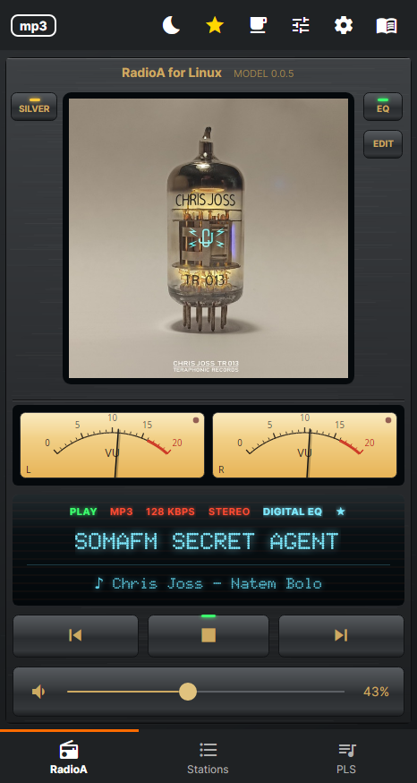
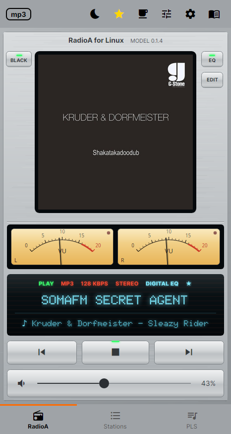
Vintage player. In the app the needles measure the sound it plays — here they only move like music. Drag the slider to try them, AUTO to let them play.
LibVLC plays ICY, MP3, AAC, Ogg and HLS. No second engine to choose, nothing to configure — paste a URL and it plays.
Narrow like a phone or the whole monitor. The player switches to two columns when there is room; the station grid adds columns as you widen it.
ICY titles are read from the stream, and the cover comes from iTunes, Deezer or AudioAddict. Station logos are cached on disk so the grid stays fast.
60 Hz to 16 kHz, with presets you can save and load. The same EQ files as the Android and Windows versions.
Six colour skins plus your own custom colours, five VU meter styles, and Light / Dark / Auto for the bars. The VU meter measures the sound the app plays, following the volume.
The whole app as one piece of hi-fi equipment: a dot-matrix display with status lamps, brushed-metal keys in silver or black, and two needle VU meters that swing with the music.
Closing the window keeps the radio playing. Click the tray icon to bring it back; its menu has play/stop, previous, next and exit.
Space plays or stops, Ctrl+←/→ change station, Ctrl+1/2/3 switch tabs, F1 opens help. Media keys and the desktop's sound applet work through MPRIS, even when the window is hidden.
The wheel over the volume bar changes volume, a double click on the cover plays or stops, and dragging reorders stations.
Playlists and EQ presets live in Documents/RadioA in the same formats as the other versions — copy them across and they just work. Removing the package never touches them.
A stream that dies is reconnected, also after the computer wakes from sleep; one that goes silent without an error is detected by watching the audio buffers, not just the player state.
Set it from the moon in the bar and the countdown replaces the icon. Stopping playback yourself clears the timer.
The same app at phone width, at half a screen and across a wide window. The layout reflows.
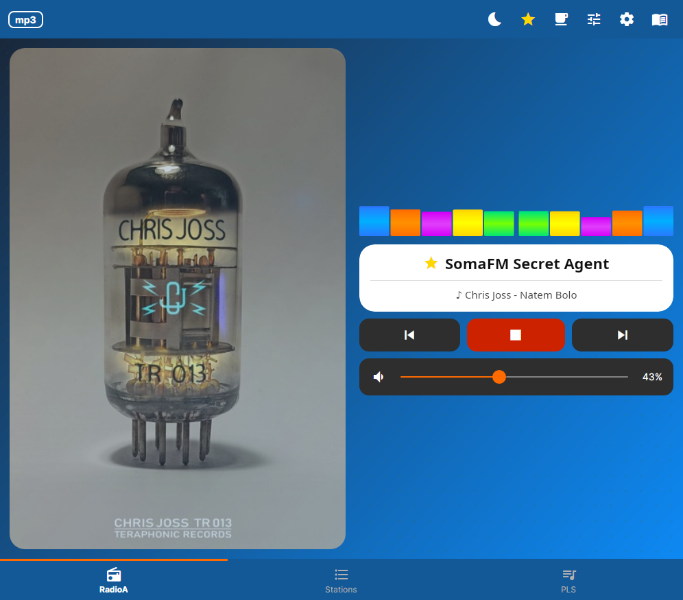
Wide window — the player splits into two columns
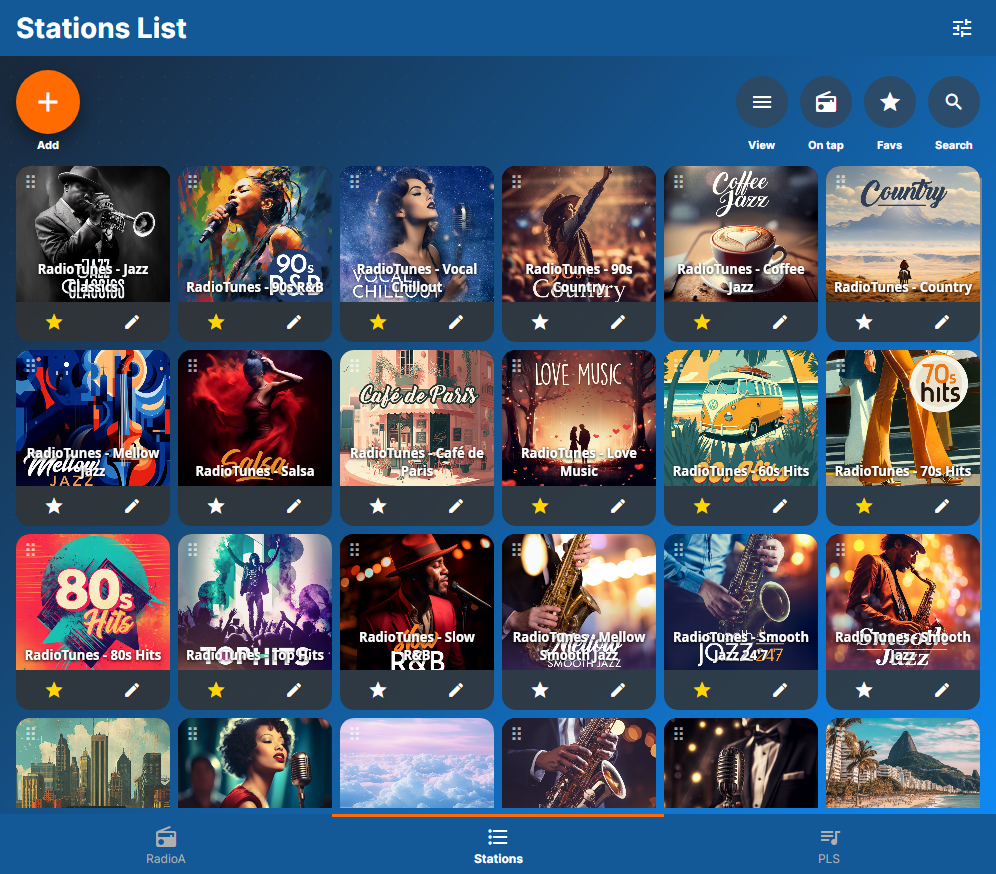
Wide window — the station grid adds columns
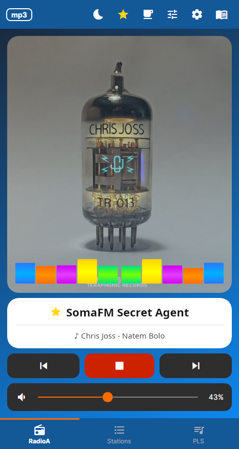
Phone width
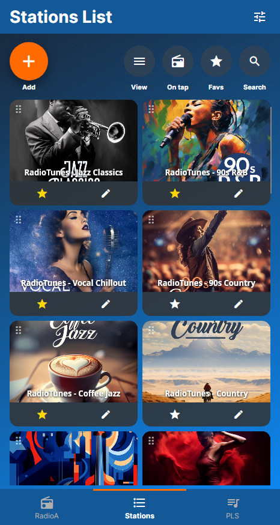
Phone width — station list
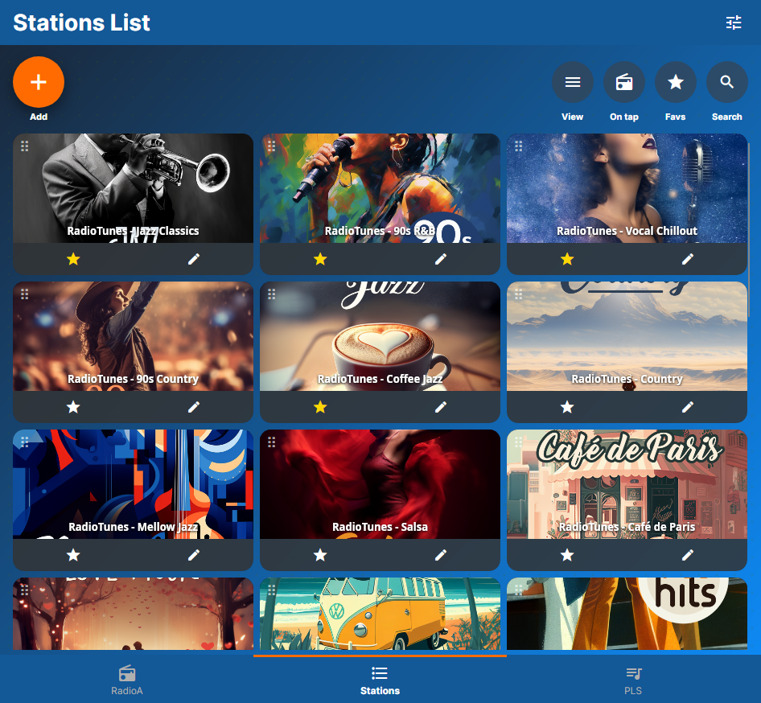
Half screen
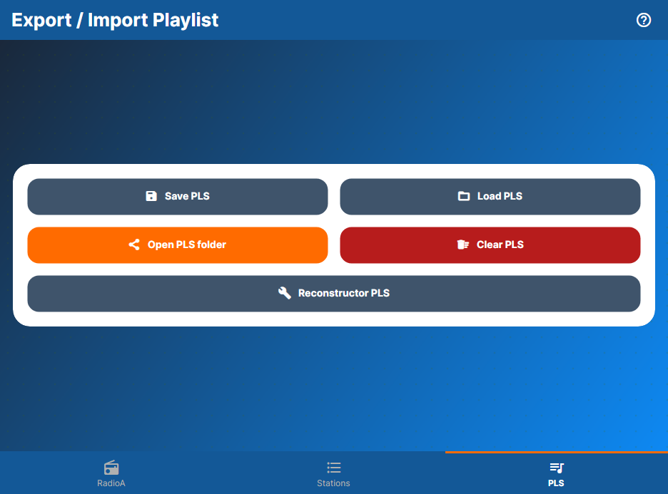
Playlists
The same player as one piece of hi-fi equipment — the needles measure the sound the app plays.
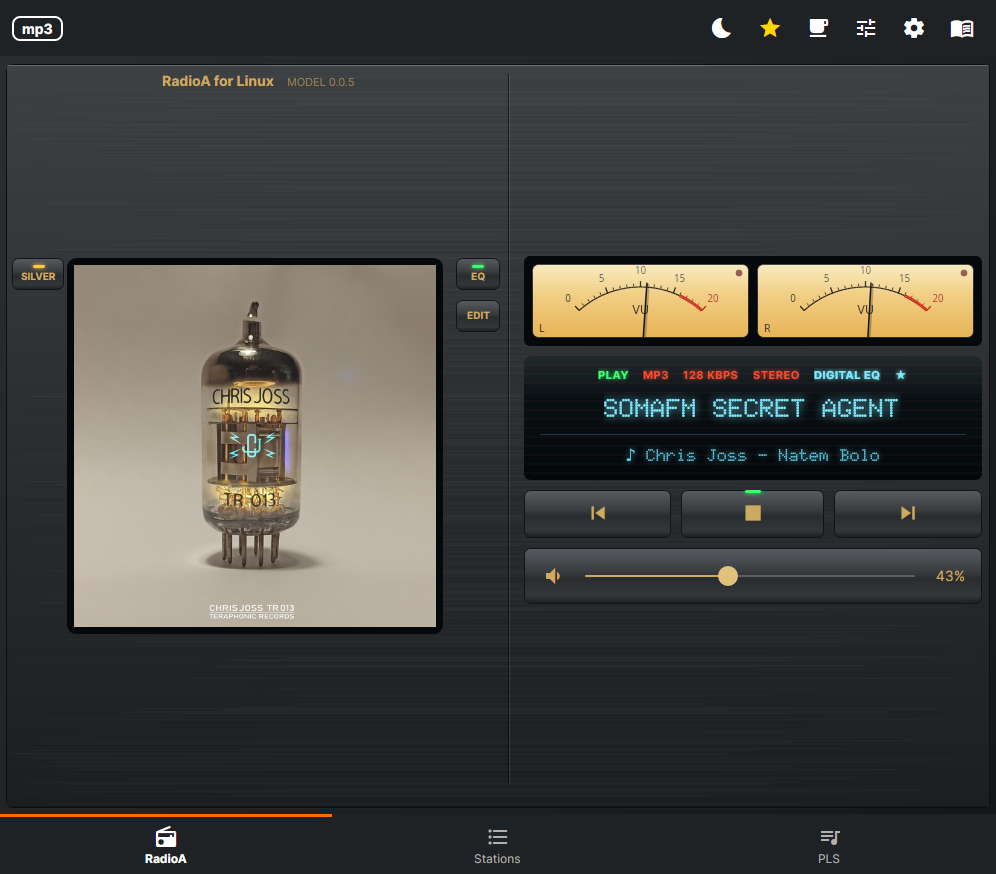
Vintage · black, wide window
Vintage · silver
Vintage · black
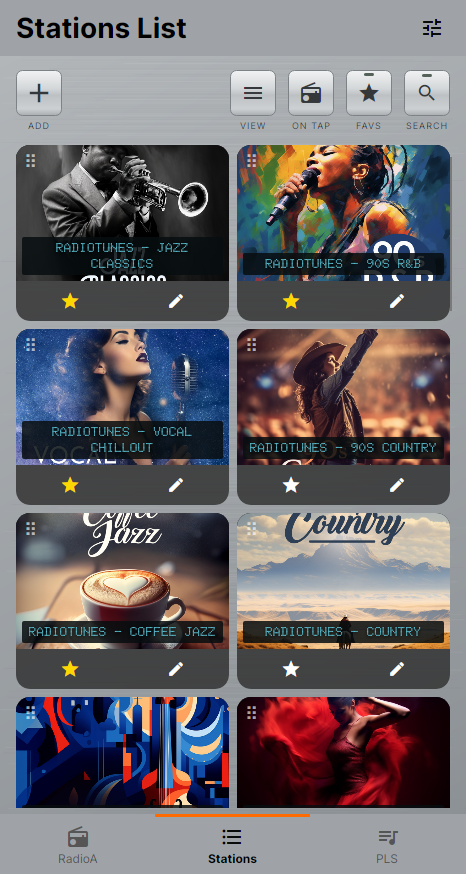
Vintage · station list
Everything has a button — nothing is hidden behind a gesture you have to guess.
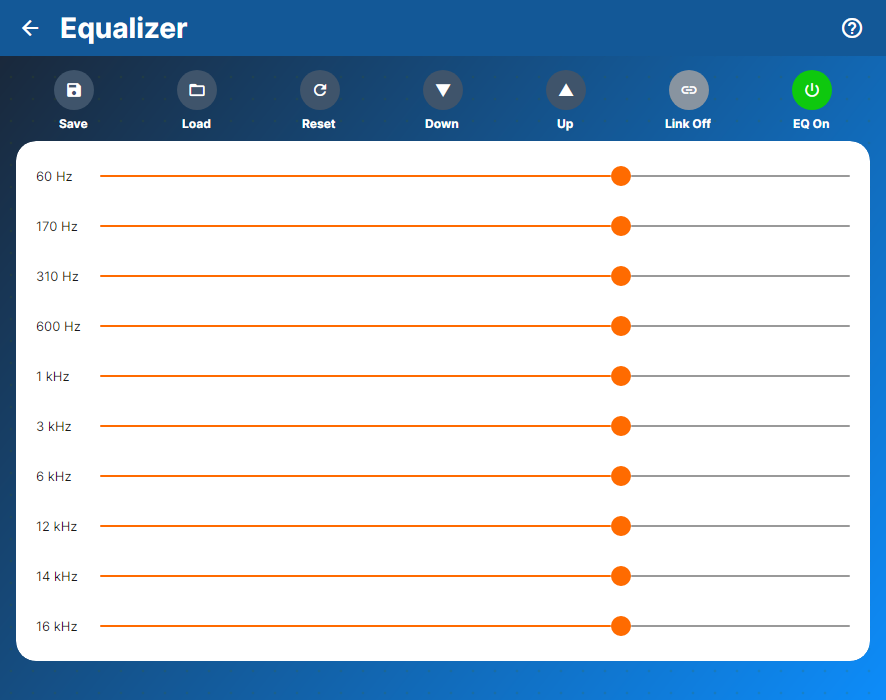
10-band equalizer with presets
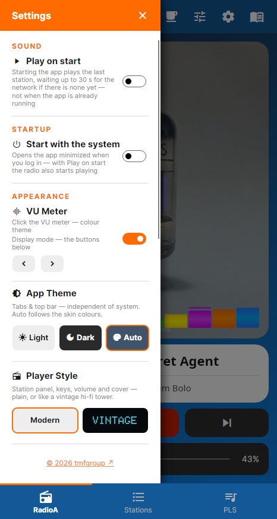
Settings
Install with apt, which also brings what the app needs from your system's repositories:
sudo apt install ./radioa_<version>_amd64.deb
The Releases page and the project's APT repository are the only places to get the Linux app. A copy from anywhere else may have been altered. Installing also adds that repository and its signing key to your system, so new versions appear in your Update Manager; they install without asking only if you have turned on automatic updates. To turn this off and keep the app: sudo rm /etc/apt/sources.list.d/radioa.list. Uninstalling removes both. Versions 0.1.2 and older need one more download by hand.
Licence terms ·
Privacy policy ·
Third-party licences
Found a problem? Report it on GitHub.
Every release carries SHA256SUMS, its signature and the public key. Compare the key with this fingerprint:
7B94 EDA6 999D F3F0 E34A 7D3C 8548 DB28 19D9 7E04gpg --import radioa-signing-key.asc gpg --show-keys --fingerprint radioa-signing-key.asc gpg --verify SHA256SUMS.gpg SHA256SUMS sha256sum -c SHA256SUMS --ignore-missing
Playlists and equalizer presets move between all three versions in both directions.
Half of the Android app is about the car and the phone — Android Auto, the Bluetooth media session, switching from Wi-Fi to mobile data. None of that has a meaning on a desktop, so none of it is here. What is left is the radio itself, plus the things a Linux desktop expects.
| Feature | Android | Windows | Linux |
|---|---|---|---|
| Internet radio, ICY metadata, cover art | yes | yes | yes |
| 10-band equalizer with presets | yes | yes | yes |
| Skins, VU meters, sleep timer | yes | yes | yes |
| PLS / JSON playlists (same file format) | yes | yes | yes |
| HLS (.m3u8) streams | ExoPlayer | LibVLC | LibVLC |
| Keeps playing in the background | foreground service | system tray | system tray |
| Keyboard shortcuts & media keys | — | yes | yes (MPRIS) |
| Resizable window, two-column player | — | yes | yes |
| Android Auto | certified | not applicable | not applicable |
| Wi-Fi → mobile data fallback | yes | not applicable | not applicable |
| Automatic updates | Google Play | Microsoft Store | apt, in your Update Manager |
If RadioA plays in your room, consider buying the developer a coffee. It is entirely optional and unlocks nothing.